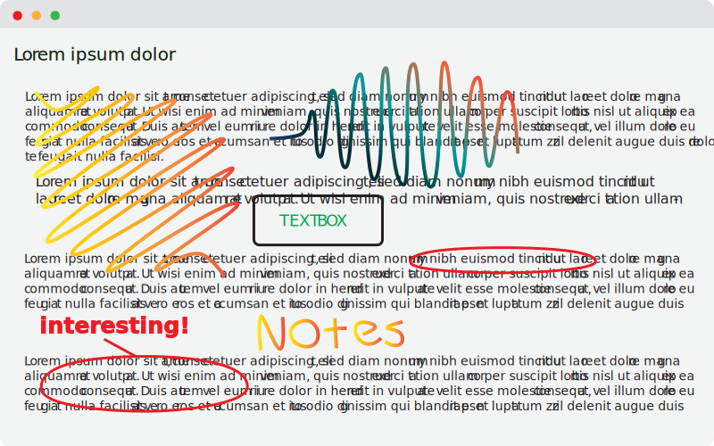
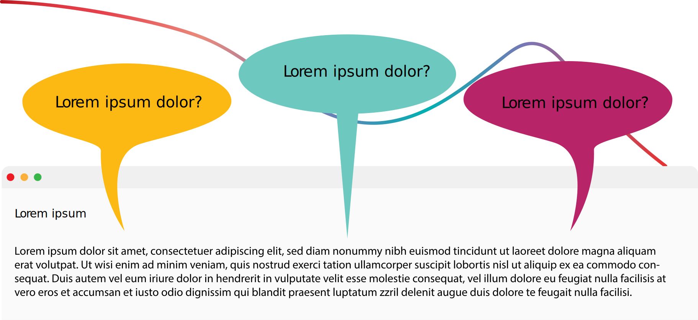

Research,
Simplified
Spade allows you to directly annotate on, automatically cite, assess credibility, and webscrape webpages.

Spade allows you to directly annotate on, automatically cite, assess credibility, and webscrape webpages.
With Spade, you can mark up a page as if it were on paper.
on a webpage using a pen, highlighter, and textboxes.
to the cloud so they appear even after you exit a page.
with colleagues, peers, and friends for reference.
Using artifical intelligiance and web scraping, Spade reviews the credibility of the webpage for you. Relavance, author, grammar scores and more are calculated into a final rating.
Spade automatically cites webpages in MLA, Chicago, APA and compiles citations into a list for you.

Tired of reading large chunks of text?
Spade finds the answers to your questions directly from the webpage using artifical intelligiance.
Let Spade work for you.